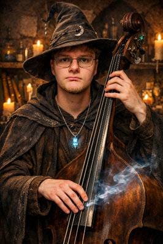
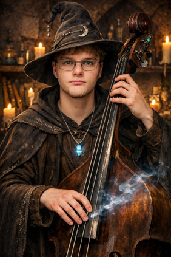

Week 2 – AI, Identity, and Pattern
The Artifact
This was the photo I gave GPT:
After prompting it to change it to a selfie, it gave me:
I then asked it to turn me into a wizard playing the upright bass.

I also asked it to make me more attractive:

Reflection
For this assignment, I used the image generator Dall-e through ChatGPT. For this, I intentionally gave it an unflattering photo of me in poor lighting to see how it would correct for some of the “blemishes.” I first asked it to make it into a selfie, where it changed my posture to fit it as me taking it as a “selfie.” I immediately noticed that my folliculitis (inflammation) on my neck was spread from the sides of my neck to the entire front. Small details like this and my eyes seeming darker are small but important details that add up over time to create “incorrect” images that take away from the validity of the AI. When looking at a more extreme example, like the photo in which I am a wizard playing the upright bass, these kinds of generalizations and mistakes become more evident. For instance, it takes the standard Dungeons and Dragons type of wizard and gives me the stereotypical brown robes and hat. On top of this, it seems a lot wrong with the scaling of the bass, making it too small and giving me improper hand position. On top of this, by asking for it to make me more “attractive” it gave me a conventionally slimmer face with less blemishes, taking away from my facial features rather than embracing my more “attractive” features.
Attribution & AI Use
I used DALL-E through ChatGPT to generate the AI images.